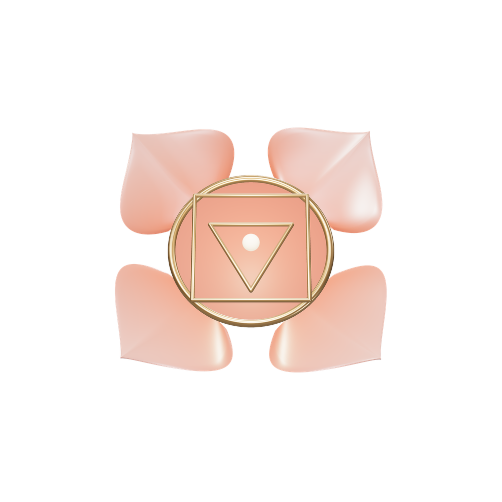
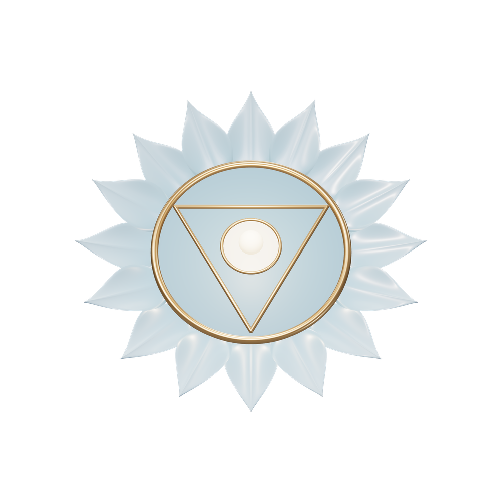
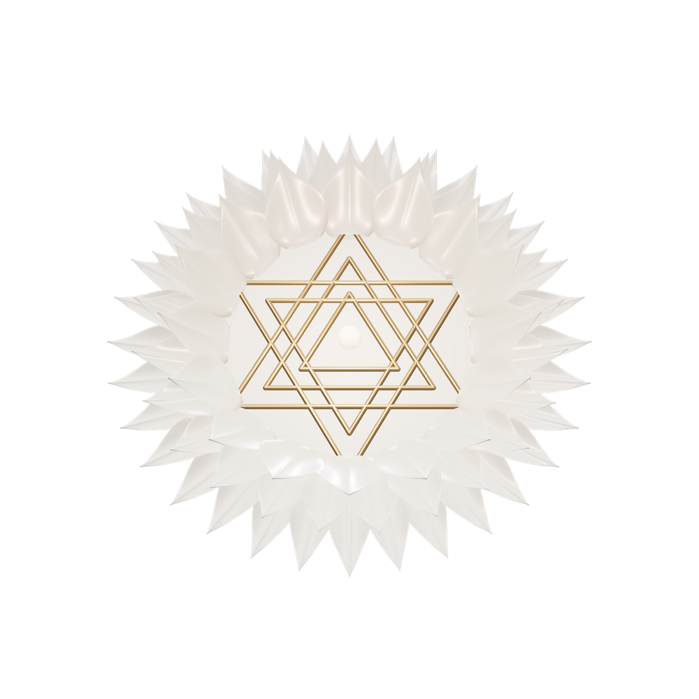
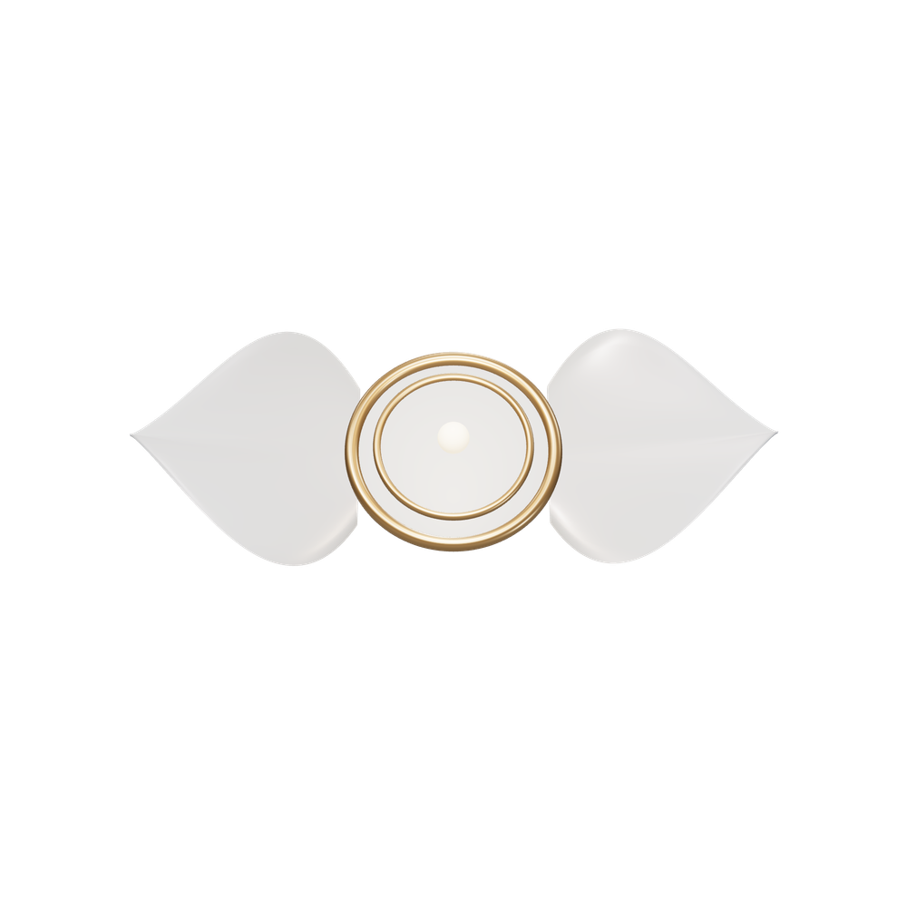
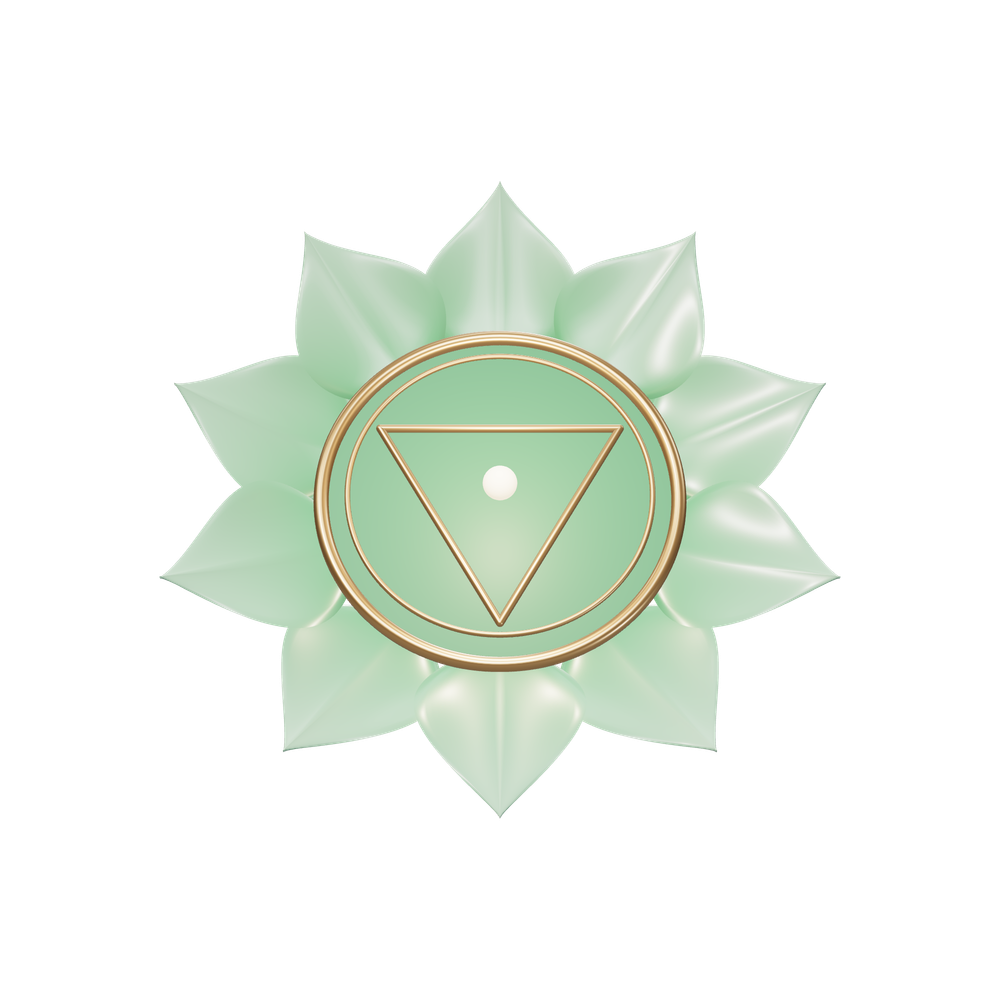

Every main screen, designed at desktop (1440 × 900) and phone (390 × 844). The lotus is the approved hero lotus. The seven chakra forms are 3D renders built from the official Sahaja Yoga USA chakra-guide geometry. Notes under each screen cover motion and interaction, which a still frame can't show.
One idea runs through everything: monumental serif type, one luminous object in front of it, and almost nothing else. The ivory room is home. Each chakra turns the whole screen its own colour. While you meditate, the time takes the place of the title and the object stays as your anchor.
/Arrival is 2.4 s, once. The letters of SAHAJA rise out of a mask one by one, then YOGA follows. The lotus starts as a closed bud below its resting place and blooms open as it settles, its heart warming last. After that, nothing moves on its own.
This keeps your approved composition and adds YOGA as a second line so the full brand is visible. The lotus sits where the two lines meet. The header portrait is your photo, shown here for placement only until its source and permission are confirmed.
/ (optional ritual)Breathe out. Let it open.
Release at any time and it gently closes again.
Holding for 4 s opens the lotus fully. As it opens, its golden heart brightens and the letters drift a few pixels apart. A light, cool breeze of particles rises from the centre. Letting go reverses it at the same pace, so nothing is lost by stopping.
This is the Noomo “reversible commitment” move, made gentle: a moment of attention before you begin. It never claims to measure anything; it's a doorway.
/ (scroll scene, 7 worlds)
The first centre, at the base of the spine. Element: earth. Felt at the base of the palms.

The fifth centre, at the neck. Element: ether. Felt in the index fingers.
Raga Jaijaivanti is available here
Enter Vishuddhi →
The seventh centre, the thousand-petalled lotus at the crown. Felt at the centre of the palm.
One pinned, scroll-scrubbed scene of about seven screens. The lotus sinks and becomes Mooladhara. Then the view rises up the spine: each chakra form rises into the centre, and its colour floods the screen from below like light filling a room. Names cross-fade behind the forms. Scrolling back plays it in reverse.
Positions, elements, fingers and qualities follow the official Sahaja Yoga USA guides. One quality word per chakra and one short line, nothing more. Depth lives inside each world.
/ (preview of the atlas)Seven chakras along three channels. The Kundalini rises through the centre channel and, at the crown, meets the all-pervading power.
Desire and emotion. The past.
Action and thought. The future.
The path of evolution. The present.


The Ascent ends by pulling back to show the whole system at once. The seven forms settle onto the centre channel and the two side channels draw in as lines. Each form breathes very slightly (2% scale, 8 s) only while the pointer is near.
The channel descriptions are paraphrased from the official “nadis” page. The left and right channels cross at Agnya, as the guides show. Void and the Hamsa can be added as an overlay once the content is reviewed.
/Count mantras without looking at the screen. Tap anywhere: every tenth tap completes a round, and the eleventh begins the next.
Bandhan · Maha Mantras · Vishuddhi · Silence
Round 2 · 7 of 10
Try it: tap the lotus
Each tap lights the next seed with a soft gold pulse (240 ms). The tenth closes the arc with one slow golden breath across all ten seeds, then they empty for the next round.
The preview on the right is the real counter, not a picture. Visitors can tap it right here, and it says exactly what the app will do. Returning practitioners see their saved routine and “Continue my practice”.
Ten taps make one round, always; that's the default everywhere, and no screen, test or line of copy may say 12. The 11th tap is round 2, lap 1.
/ (closing + footer)After Sahasrara, the colour drains back to ivory and the lotus returns, small and quiet. One line, three ways forward. The footer is small and plain.
The three links are the whole site's map: practise, explore, learn. Nothing else competes.
The independent status is stated clearly. Footer pages: About, Sources (every text and recording with its origin), Privacy, Accessibility and Feedback.
/meditateOn hover, the row slides 18 px right and its object rises in beside it: the paused chakra for Resume, the lotus for Quick sit, all seven forms fanning out for Choose a chakra. This is Buttermax's project grid, made calm.
From the homepage to a running session takes two clicks. No setup, no account.
/meditate/sessionRest the left hand on your lap, palm up. Raise the right hand from the left hip, over the head, down to the right hip, and back again. Seven times.
Tap, or press Space,
after each arc
The point of light travels the arc at the pace of a slow arm movement (about 3 s each way) as a gentle guide, never a demand. The count advances only when you tap.
Bandhan steps paraphrased from the Sahaja Yoga USA guides. Kept separate from mantra rounds: Bandhan counts to 7, mantras count in tens.
/meditate/sessionTap anywhere to count · Space
The same structure as the hero: the time stands where SAHAJA stood, and the lotus floats in front of it. The ten seeds are a mala arc beneath, part of the geometry rather than a widget.
Time is stored as timestamps, so it stays accurate across tab sleep and reloads. Paused time is never counted. Taps at chanting speed are never dropped.
the 10th tapRound 2 complete
On the tenth tap, all ten seeds glow together for one slow breath (1.6 s) and the lotus warms a little. Then the seeds empty from left to right, ready. There's no flash and no confetti.
At exactly 10, 20 or 30 taps, the screen says the round is complete instead of showing an ambiguous “lap 0”. The next tap starts lap 1 of the new round.
If the bell is on, one soft bell sounds per round, never per tap.
/meditate/session · silentTap to show controls
Still deliberate, not a black screen with a stopwatch. A dim warm room, the lotus glowing softly, and the time a whisper you can just make out. Dim mode suits evening and closed eyes; silent mode also works in the ivory room.
Nothing moves. Taps still count (or not, in pure silence). One tap reveals the controls for 3 s. A countdown, if set, ends with a soft glow, never an alarm.
Guided, immersive and silent are one space with less and less on screen. You can switch at any time without losing the count.
/meditate/completeMorning Meditation. Bandhan, Maha Mantras, Vishuddhi, then silence.
3 rounds and 1 lap · 31 taps · average lap 9.4 s · 07:12 to 07:36
Saved only on this device. You can export or delete everything in Settings.
One big honest number: the time you gave. The rounds are drawn as filled malas, three complete and one with a single seed. No score, no streak, no judgement.
Saves exactly once, even with a double click or a reload. Repeat starts the same routine; Return goes home. The note is optional and private.
Stored: date, start and end time, active duration, routine, chakras, taps, rounds, lap intervals and your note. Nothing is ever framed as spiritual progress.
/chakrasFifth centre · Ether · Light blue · Index fingers
Enter VishuddhiMoving down the list swaps the form on the right. The old one sinks and the new one rises, and the colour field behind it cross-fades. It works like Buttermax's project list, with the chakra as the project.
The list runs from Sahasrara at the top to Mooladhara at the bottom, the way they sit in the body.
/chakras/vishuddhiArriving from the atlas, the blue rises from the bottom of the screen while the form moves in from where you clicked. Then everything holds still. The form turns a few degrees toward the pointer, never spins, and the triangle always points down.
Form: 16 petals, a downward triangle and a moon disc, from the official guide. The raga plays through Bandcamp's official embed, credited, until hosting permission is given.
/chakras/vishuddhi · sessionTap anywhere to count
Pressing Meditate here doesn't load a new page. The name dissolves, the timer rises into its place behind the form, the seeds draw in beneath, and the header withdraws. The form never jumps.
It works exactly like the ivory session: the screen is the counter. The mini player stays tiny, with pause and progress only. Switching chakra mid-session asks before changing what the mantra log records.
All text is the world's own ink on its own deep field, never grey on colour. Every pair passes AA, most AAA.
/chakras/vishuddhi · drawerThe drawer slides in from the right (420 ms, ease out). The world steps back: the form drifts left and the name dims. Opening it never pauses a session or the music.
Focus moves into the drawer; Esc or Close returns it. Links open the official sources in a new tab.
Büro discipline: one typeface doing all the hierarchy, generous measure, and qualities set as a sentence of words rather than a bulleted list.
colour + form systemOne family: pearl petals tinted with the chakra's official colour, a gold relief yantra and a glowing centre. Each world gets a deep, low-saturation field for comfort, with the chakra's hue reserved for the form and its light.
Colours come from the official Sahaja Yoga USA guides. Petal counts are 4, 6, 10, 12, 16, 2 and 1000. The ragas are candidate pairings from the Sahaja Artists album, to be reviewed before launch.
Each form is real 3D in the build. These frames are the target renders. Vishuddhi gets finished first; the others follow the same system.
/practiceFriday, 16 October
Begin Morning Meditation →24 min · Bandhan, Maha Mantras, Vishuddhi, Silence · your default
This week you sat 5 times, for 2 hours 14 minutes, and counted 23 rounds.
Recent
October
Routines
The next best action comes first, as a headline you can click. The week is summarised in one sentence instead of a dashboard of numbers. The calendar draws each day as a seed sized by minutes sat.
Click a day to see its sessions, or a session for its full detail and note. Routines open in the builder. Everything stays on the device, with export and delete in Settings.
No streak banners, no guilt, no levels. Empty days are drawn as quiet outlines, not red marks.
/practice/routinesYour default routine · about 24 minutes
Kundalini raising
Once · untimed
Bandhan
Seven arcs
Maha Mantras
Full sequence · text awaiting review
Vishuddhi
3 rounds of 10 · Raga Jaijaivanti
Silence
Countdown, ends with a soft glow
+ Add a practice
Your preferred order (Bandhan → Maha Mantras → chakra → rounds → silence) and the source-informed one (Kundalini → Bandhan → chakra → stillness → closing mantras) are both templates. Neither is labelled “the only way”.
Anything whose text isn't reviewed yet, like the Maha Mantras, says so right in the list.
/libraryBüro-style: the sections are the page, set as huge lines. Hovering one reveals what's inside. No cards, no thumbnails grid.
Search covers everything. Filter by type or by chakra (the seven dots). Every item shows its source, publisher, rights status and review date.
Nothing here is generated. Talks are official embeds or links, and mantra wording comes only from reviewed sources.
/library/practices/footsoakEvening · 10 to 15 min
Sahaja Yoga USA handouts
Awaiting practitioner review
A simple evening practice that uses water, salt and a little warmth to help settle the attention.
Fill a basin with comfortably warm water and stir in a tablespoon of salt.
Sit with your feet in the water and your hands resting on your lap, palms up. Many people place a photo of Shri Mataji and a candle in front of them.
Meditate for ten to fifteen minutes.
Dry your feet, pour the water into the toilet and rinse the basin.
Test the water with your hand first. If you have a condition affecting your feet or circulation, check with your doctor before using warm water.
A reading column of about 65 characters, a left rail of facts, and large serif numerals for the steps, because the order matters here.
“Start a footsoak timer” opens a simple timed session with the same calm screen. Every guide ends in an action.
This text is paraphrased from published guidance and is clearly marked as awaiting review until a practitioner signs it off.
/startSahaja Yoga is a meditation founded by Shri Mataji Nirmala Devi in 1970, and it's always free. Go at your own pace; you can skip any step.
This site is an independent companion. For free classes near you, visit sahajayoga.org.
What Sahaja Yoga is
A four-minute read
Your Self-Realisation
Guided by Shri Mataji · official video
Your first meditation
Ten quiet minutes
Kundalini and Bandhan
Two short daily practices
Explore the chakras
Seven worlds, at your own pace
Five steps, each short. Self-Realisation uses an official recorded experience; the site never claims to give it.
Progress is remembered on the device. Every step can be skipped, and “Skip to meditation” is always there.
Welcoming and plain, with no jargon on the first screen. It points to official classes for anyone who wants a teacher.
390 × 844The fifth centre, at the neck. Element: ether. Felt in the index fingers.
Tap anywhere to count
The centre of communication, diplomacy and collectivity.
Raga
Jaijaivanti
Friday, 16 October
Begin Morning Meditation →24 min · your default
This week you sat 5 times, for 2 hours 14 minutes, and counted 23 rounds.
October
These are recomposed for the phone, not shrunk. On the hero, SAHAJA and YOGA frame the lotus top and bottom. Primary actions are full-width at thumb height, and the portrait stays visible in the header.
Every target is at least 44 px, and the meditation counter is the whole screen. The Ascent becomes a vertical swipe with a dot rail.
On phones the 3D is capped at 1.5× pixel density, and still renders take over when the device is slow or the battery is low.